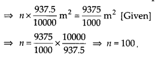
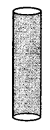
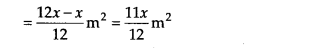
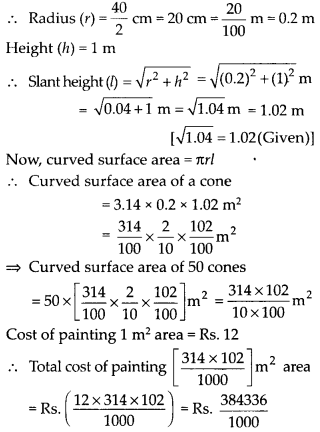

NCERT Solutions for Class 9 Maths Chapter 13 Surface Areas and Volumes Ex 13.1 are part of NCERT Solutions for Class 9 Maths. Here we have given NCERT Solutions for Class 9 Maths Chapter 13 Surface Areas and Volumes Ex 13.1.
NCERT Solutions for Class 9 Maths Chapter 13 Surface Areas and Volumes Ex 13.1
Ex 13.1 Class 9 Maths Question 1.
A plastic box 1.5 m long, 1.25 m wide and 65 cm deep is to be made. It is opened at the top. Ignoring the thickness of the plastic sheet, determine
(i) The area of the sheet required for making the box.
(ii) The cost of sheet for it, if a sheet measuring 1m2 costs ₹20.
Solution:
(i) Here, length (l) = 1.5 m, bread th(b) = 1 .25 m
and height (h) = 65 cm = \(\frac { 65 }{ 100 }\) m = 0.65 m
∵ It is open from the top.
∴ Its surface area
= [Lateral surface area] + [Base area]
= [2(1 + b)h] + [lb]
= [2(1.50 + 1.25)0.65] m2 + [1.50 x 1.25] m2
= [2 x 2.75 x 0.65] m2 + [1.875] m2
= 3.575 m2+ 1.875 m2 = 5.45 m2
∴ Area of the sheet required for making the box = 5.45 m2
(ii) Cost of 1 m2 sheet = Rs. 20
Cost of 5.45 m2 sheet = Rs. (20 x 5.45)
= Rs. 109
Hence, cost of the required sheet = Rs. 109
Ex 13.1 Class 9 Maths Question 2.
The length, breadth and height of a room are 5 m, 4 m and 3 m, respectively. Find the cost of white washing the walls of the room and the ceiling at the rate of ₹17.50 per m2.
Solution:
Length of the room (l) = 5 m
Breadth of the room (b) = 4 m
Height of the room (h) = 3 m
The room is like a cuboid whose four walls (lateral surface) and ceiling are to be white washed.
∴ Area for white washing
= [Lateral surface area] + [Area of the ceiling]
= [2(l + b)h] + [l x b]
= [2(5 + 4) x 3] m2 + [5 x 4] m2 = 54 m2 + 20 m2 = 74 m2
Cost of white washing for 1 m2 area = Rs. 7.50
∴ Cost of white washing for 74 m2 area = Rs. (7.50 x 74) = Rs. 555
Thus, the required cost of white washing = Rs. 555
Ex 13.1 Class 9 Maths Question 3.
The floor of a rectangular hall has a perimeter 250 m. If the cost of painting the four walls at the rate of ₹10 per m2 is ₹15000, find the height of the hall.
[Hint: Area of the four walls = Lateral surface area]
Solution:
A rectangular hall means a cuboid.
Let the length and breadth of the hall be l and b respectively.
∴ Perimeter of the floor = 2(l + b)
⇒ 2(l + b) = 250 m
∵ Area of four walls = Lateral surface area = 2(1 + b) x h, where h is the height of the hall = 250 h m2
Cost of painting the four walls
= Rs. (10 x 250 h) = Rs. 2500h
⇒ 2500 h = 15000 ⇒ h = \(\frac { 15000 }{ 2500 }\) = 6
Thus, the required height of the hall = 6 m
Ex 13.1 Class 9 Maths Question 4.
The paint in a certain container is sufficient to paint an area equal to 9.375 m2. How many bricks of dimensions 22.5 cm x 10 cm x 7.5 cm can be painted out of this container.
Solution:
Total area that can be painted = 9.375 m2
Here, Length of a brick (l) = 22.5 cm
Breadth of a brick (b) = 10 cm
Height of a brick (h) = 7.5 cm
Since a brick is like a cuboid, then
Total surface area of a brick = 2[lb + bh + hl]
= 2[(225 x 1(0) + (10 x 7.5) + (7.5 x 22.5)] cm2
= 2[(225) + (75) + (168.75)] cm2
= 2[468.75] cm2 = 937.5 cm2 = \(\frac { 937.5 }{ 10000 }\) m2
Let the required number of bricks be n
∴ Total surface area of n bricks = n x \(\frac { 937.5 }{ 10000 }\) m2

Thus, the required number of bricks = 100
Ex 13.1 Class 9 Maths Question 5.
A cubical box has each edge 10 cm and another cuboidal box is 12.5 cm long, 10 cm wide and 8 cm high.
(i) Which box has the greater lateral surface area and by how much?
(ii) Which box has the smaller total surface area and by how much?
Solution:
For the cubical box with edge (a) = 10 cm
Lateral surface area = 4a2 = 4 x 102 cm2
= 400 cm2
Total surface area = 6a2 = 6 x 102 cm2
= 600 cm2
For the cuboidal box with dimensions,
Length (l) = 12.5 cm,
Breadth (b) = 10 cm,
Height (h) = 8 cm
∴ Lateral surface area = 2[l + b] x h = 2[12.5 + 10] x 8 cm2 = 360 cm2
Total surface area = 2[lb + bh + hl]
= 2[(12.5 x 10) + (10 x 8) + (8 x 12.5)] cm2
= 2[125 + 80 + 100] cm2
= 2[305] cm2
= 610 cm2
(i) A cubical box has the greater lateral surface area by (400 – 360) cm2 = 40 cm2.
(ii) Total surface area of a cubical box is smaller than the cuboidal box by (610 – 600) cm2 = 10 cm2.
Ex 13.1 Class 9 Maths Question 6.
A small indoor greenhouse (herbarium) is made entirely of glass panes (including base) held together with tape. It is 30 cm long, 25 cm wide and 25 cm high.
(i) What is the area of the glass?
(ii) How much of tape is needed for all the 12 edges?
Solution:
The herbarium is like a cuboid.
Here, length (l) = 30 cm,
breadth (b) = 25 cm,
height (h) = 25 cm
(i) Surface area of the herbarium (glass)
= 2[lb + bh + hl]
= 2[(30 x 25) + (25 x 25) + (25 x 30)] cm2 – 2[750 + 625 + 750] cm2
= 2[2125] cm2
= 4250 cm2
Thus, the required area of the glass = 4250 cm2
(ii) Total length of 12 edges = 4l + 4b + 4h
= 4(l + b + h)
= 4(30 + 25 + 25) cm
= 4 x 80 cm = 320 cm
Thus, the required length of tape = 320 cm
Ex 13.1 Class 9 Maths Question 7.
Shanti Sweets Stalll was placing an order for making cardboard boxes for packing their sweets. Two sizes of boxes were required. The bigger of dimensions 25 cm x 20 cm x 5 cm and the smaller of dimensions 15 cm x 12 cm x 5 cm. For all the overlaps, 5% of the total surface area is required extra. If the cost of the cardboard is ₹4 for 1000 cm², find the cost of cardboard required for supplying 250 boxes of each kind.
Solution:
For bigger box:
Length (l) = 25 cm,
Breadth (b) = 20 cm,
Height (h) = 5 cm
Total surface area of a box = 2(lb + bh + hl)
= 2[(25 x 20) + (20 x 5) + (5 x t25)] cm2
= 2 [500 + 100 + 125] cm2
= 2[725] cm2
= 1450 cm2
Total surface area of 250 boxes = (250 x 1450) cm2 = 362500 cm2
For smaller box:
l = 15 cm, b = 12 cm, h = 5 cm
Total surface area of a box = 2 [lb + bh + hl]
= 2[(15 x 12) + (12 x 5) + (5 x 15)] cm2
= 2[180 + 60 + 75] cm2 = 2[315] cm2 = 630 cm2
∴ Total surface area of 250 boxes = (250 x 630) cm2 = 157500 cm2
Now, total surface area of both type of boxes = 362500 cm2 +157500 cm2 = 520000 cm2 Area for overlaps = 5% of [total surface area]
= \(\frac { 5 }{ 100 }\) x 520000 cm2 = 26000 cm2
∴ Total surface area of the cardboard required = [Total surface area of 250 boxes of each type] + [Area for overlaps]
= 520000 cm2 + 26000 cm2 = 546000 cm2
∵ Cost of 1000 cm2 cardboard = Rs. 4
∴ Cost of 546000 cm2 cardboard
= Rs.\(\frac { 4\times 546000 }{ 1000 }\) = Rs. 2184
Ex 13.1 Class 9 Maths Question 8.
Parveen wanted to make a temporary shelter, for her car, by making a box-like structure with tarpaulin that covers all the four sides and the top of the car (with the front face as a flap which can be rolled up). Assuming that the stitching margins are very small and therefore negligible, how much tarpaulin would be required to make the shelter of height 2.5 m, with base dimensions 4 m x 3 m?
Solution:
Here, length (l) = 4 m,
breadth (b) = 3m
and height (h) = 2.5 m
The structure is like a cuboid.
∴ The surface area of the cuboid, excluding the base
=[Lateral surface area] + [Area of ceiling]
= [2(l + b)h] + [lb]
= [2(4 + 3) x 2.5] m2 + [4 x 3] m2
= 35 m2 + 12 m2 = 47 m2
Thus, 47 m2 tarpaulin would be required.
NCERT Solutions for Class 9 Maths Chapter 13 Surface Areas and Volumes (Hindi Medium) Ex 13.1


NCERT Solutions for Class 9 Maths Chapter 13 Surface Areas and Volumes Ex 13.2
Ex 13.2 Class 9 Maths Question 1.
The curved surface area of a right circular cylinder of height 14 cm is 88 cm2. Find the diameter of the base of the cylinder.
Solution:
Let r be the radius of the cylinder.
Here, height (h) = 14 cm and curved surface area = 88 cm2
Curved surface area of a cylinder = 2πrh
⇒ 2πrh = 88
⇒ 2 x \(\frac { 22 }{ 7 }\) x r x 14 = 88
⇒ r = \(\frac { 88\times 7 }{ 2\times 22\times 14 }\) = 1 cm
∴ Diameter = 2 x r = (2 x 1) cm = 2 cm
Ex 13.2 Class 9 Maths Question 2.
It is required to make a closed cylindrical tank of height 1 m and base diameter 140 cm from a metal sheet. How many square metres of the sheet are required for the same?
Solution:
Here, height (h) = 1 m
Diameter of the base = 140 cm = 1.40 m
Radius (r) = \(\frac { 1.40 }{ 2 }\)m = 0.70 m
Total surface area of the cylinder = 2πr (h + r)
= 2 x \(\frac { 22 }{ 7 }\) x 0.70(1 + 0.70)m2
= 2 x 22 x 0.10 x 1.70 m2
= 2 x 22 x \(\frac { 10 }{ 100 }\) x \(\frac { 170 }{ 100 }\)m2
= \(\frac { 748 }{ 100 }\)m2 = 7.48 m2
Hence, the required sheet = 7.48 m2
Ex 13.2 Class 9 Maths Question 3.
A metal pipe is 77 cm long. The inner ft diameter of a cross section is 4 cm, the outer diameter being 4.4 cm (see figure). Find its
(i) inner curved surface area.
(ii) outer curved surface area.
(iii) total surface area.

Solution:
Length of the metal pipe = 77 cm
It is in the form of a cylinder.
∴ Height of the cylinder (h) = 77 cm
Inner diameter = 4 cm
Inner radius (r) = \(\frac { 4 }{ 2 }\) cm = 2 cm
Outer diameter = 4.4 cm
⇒ Outer radius (R) = \(\frac { 4.4 }{ 2 }\) cm = 2.2 cm
(i) Inner curved surface area = 2πrh
= 2 x \(\frac { 22 }{ 7 }\) x 2 x 77 cm2
= 2 x 22 x 2 x 11 cm2 = 968 cm2
(ii) Outer curved surface area = 2πRh
(iii)Total surface area = [Inner curved surface area] + [Outer curved surface area] + [Area of two circular ends]
= [2πrh] + [2πRh] + 2[π(R2 – r2)]
= [968 cm2] + [1064.8 cm2]
Ex 13.2 Class 9 Maths Question 4.
The diameter of a roller is 84 cm and its length is 120 cm. It takes 500 complete revolutions to move once over to level a playground. Find the area of the playground in m2.
Solution:
The roller is in the form of a cylinder of diameter = 84 cm
⇒ Radius of the roller(r) = \(\frac { 84 }{ 2 }\) cm = 42 cm
Length of the roller (h) = 120 cm
Curved surface area of the roller = 2πrh
= 2 x \(\frac { 22 }{ 7 }\) x 42 x 120 cm2
= 2 x 22 x 6 x 120 cm2 = 31680 cm2
Now, area of the playground levelled in one revolution of the roller = 31680 cm2
= \(\frac { 31680 }{ 10000 }\)m2
∴ Area of the playground levelled in 500
revolutions = 500 x \(\frac { 31680 }{ 10000 }\)m2 = 1584m2
Ex 13.2 Class 9 Maths Question 5.
A cylindrical pillar is 50 cm in diameter and 3.5 m in height. Find the cost of painting the curved surface of the pillar at the rate of ₹12.50 per m2 .
Solution:
Diameter of the pillar = 50 cm
∴ Radius (r) = \(\frac { 50 }{ 2 }\)m = 25 m = \(\frac { 1 }{ 4 }\)m
and height (h) = 3.5m
Curved surface area of a pillar = 2πrh
∴ Curved surface area to be painted = \(\frac { 11 }{ 2 }\)m2
∴ Cost of painting of 1 m2 pillar = Rs. 12.50
∴ Cost of painting of \(\frac { 11 }{ 2 }\) m2 pillar
= Rs. ( \(\frac { 11 }{ 2 }\) x 12.50 )
= Rs. 68.75.
Ex 13.2 Class 9 Maths Question 6.
Curved surface area of a right circular cylinder is 4.4 m2. If the radius of the base of the cylinder is 0.7 m, find its height.Curved surface area of a right circular cylinder is 4.4 m2. If the radius of the base of the cylinder is 0.7 m, find its height.
Solution:
Radius (r) = 0.7 m
Let height of the cylinder be h m
Curved surface area of a cylinder = 2πrh
= 2 x \(\frac { 22 }{ 7 }\) x \(\frac { 7 }{ 10 }\) x hm2
But the curved surface area is 4.4 m2. [Given]
Ex 13.2 Class 9 Maths Question 7.
he inner diameter of a circular well is 3.5 m. It is 10 m deep. Find
(i) its inner curved surface area.
(ii) the cost of plastering this curved surface at the rate of ₹40 per m2.
Solution:
Hans Inner diameter of the well = 3.5 m
Radius of the well (r) = \(\frac { 3.5 }{ 2 }\)
Height of the well (h) = 10 m
(i) Inner curved surface area = 2πrh
(ii) Cost of plastering per m2 = Rs. 40
∴ Total cost of plastering the area 110 m2
= Rs. (110 x 40) = Rs. 4400
Ex 13.2 Class 9 Maths Question 8.
In a hot water heating system, there is a cylindrical pipe of length 28 m and diameter 5 cm. Find the total radiating surface in the system.
Solution:
USD Length of the cylindrical pipe (h) = 28 m
Diameter of the pipe = 5 cm
∴ Radius (r) = \(\frac { 5 }{ 2 }\) cm = \(\frac { 5 }{ 200 }\) m
Curved surface area of a cylinder = 2πrh
Thus, the total radiating surface is 4.4 m2 .
Ex 13.2 Class 9 Maths Question 9.
Find
(i) the lateral or curved surface area of a closed cylindrical petrol storage tank that is 4.2 m in diameter and 4.5 m high.
(ii) how much steel was actually used, if \(\frac { 1 }{ 12 }\) of the steel actually used was wasted in making the tank.
Solution:
The storage tank is in the form of a cylinder.
∴ Diameter of the tank = 4.2 m
⇒ Radius (r) = \(\frac { 4.2 }{ 2 }\) = 2.1 m
Height (h) = 4.5 m
Now,
(i) Lateral (or curved) surface area of the tank = 2πrh
= 2 x \(\frac { 22 }{ 7 }\) x 2.1 x 4.5 m2
= 2 x 22 x 0.3 x 4.5 m2 59.4 m2
(ii) Total surface area of the tank = 2πr(r + h)
= 2 x \(\frac { 22 }{ 7 }\) x 2.1(2.1 + 4.5)m2
= 44 x 0.3 x 6.6 m2 = 87.13 m2
Let actual area of the steel used be x m2
∴ Area of steel that was wasted = \(\frac { 1 }{ 12 }\) x x m
= \(\frac { x }{ 12 }\)m2
Area of steel used = x – \(\frac { x }{ 12 }\) m2

Thus, the required area of the steel that was actually used is 95.04 m2.
Ex 13.2 Class 9 Maths Question 10.
In figure, you see the frame of a lampshade. It is to be covered with a decorative cloth. The frame has a base diameter of 20 cm and height of 30 cm. A margin of 2.5 cm is to be given for folding it over the top and bottom of the frame. Find how much cloth is required for covering the lampshade.
Solution:
The lampshade is in the form of a cylinder,
where radius (r) = \(\frac { 20 }{ 2 }\) cm = 10 cm
and height = 30 cm.
A margin of 2.5 cm is to be added to the top and bottom of the frame.
∴ Total height of the cylinder, (h)
= 30 cm + 2.5 cm + 2.5 cm = 35 cm
Now, curved surface area = 2πrh
= 2 x \(\frac { 22 }{ 7 }\) x 10 x 35 cm2
= 2200 cm2
Thus, the required area of the cloth = 2200 cm2
Ex 13.2 Class 9 Maths Question 11.
The students of a Vidyalaya were asked to participate in a competition for making and decorating penholders in the shape of a cylinder with a base, using cardboard. Each penholder was to be of radius 3 cm and height 10.5 cm. The Vidyalaya was to supply the competitors with cardboard. If there were 35 competitors, how much cardboard was required to be bought for the competition?
Solution:
Here, the penholders are in the form of cylinder.
Radius of a penholder (r) = 3 cm
Height of a penholder (h) = 10.5 cm
Since, a penholder must be open from the top.
Now, surface area of a penholder = [Lateral surface area] + [Base area]
= [2πrh] + [πr2]
∴ Surface area of 35 penholders
= 35 x \(\frac { 1584 }{ 7 }\) cm2 = 7920 cm2
Thus, 7920 cm2 of cardboard was required to be bought.
NCERT Solutions for Class 9 Maths Chapter 13 Surface Areas and Volumes Ex 13.3
Ex 13.3 Class 9 Maths Question 1.
Diameter of the base of a cone is 10.5 cm and its slant height is 10 cm. Find its curved surface area.
Solution:
Here, diameter of the base = 10.5 cm
⇒ Radius (r) = \(\frac { 10.5 }{ 2 }\) cm
and slant height (l) =10 cm
Curved surface area of the cone = πrl
= \(\frac { 22 }{ 7 }\) x \(\frac { 10.5 }{ 2 }\) x 10cm2
= 11 x 15 x 1 cm2 = 165cm2
Ex 13.3 Class 9 Maths Question 2.
Find the total surface area of a cone, if its slant height is 21 m and diameter of its base is 24 m.
Solution:
Here, diameter = 24 m 24
∴ Radius (r) = \(\frac { 24 }{ 2 }\) m = 12 m
and slant height (l) = 21 m
∴ Total surface area of a cone = πr(r +1)
Ex 13.3 Class 9 Maths Question 3.
Curved surface area of a cone is 308 cm² and its slant height is 14 cm. Find
(i) radius of the base and
(ii) total surface area of the cone.
Solution:
Here, curved surface area = πrl = 308 cm2
Slant height (l) = 14 cm
(i) Let the radius of the base be ‘r’ cm
∴ πrl = 308 ⇒ \(\frac { 22 }{ 7 }\) x r x 14 = 308
r = \(\frac { 308\times 7 }{ 22\times 14 }\) = 7cm
Thus, radius of the cone is 7 cm
(ii) Base area = πr2 = \(\frac { 22 }{ 7 }\) x 72 cm2
= 22 x 7 cm2 = 154 cm2
and curved surface area = 308 cm2 [Given]
∴ Total surface area of the cone
= [Curved surface area] + [Base area] = 308 cm2 + 154 cm2
= 462 cm2
Ex 13.3 Class 9 Maths Question 4.
A conical tent is 10 m high and the radius of its base is 24 m. Find
(i) slant height of the tent.
(ii) cost of the canvas required to make the tent, if the cost of 1 m2 canvas is ₹70.
Solution:
Here, height of the tent (h) = 10 m
Radius of the base (r) = 24 m
(i) The slant height, l = \(\sqrt { { r }^{ 2 }-{ h }^{ 2 } }\)
= \(\sqrt { { 24 }^{ 2 }+{ 10 }^{ 2 } }\) m = \(\sqrt { 576+100 }\) m = \(\sqrt { 676 }\) m = 26m
Thus, the required slant height of the tent is 26 m.
(ii) Curved surface area of the cone = πrl
∴ Area of the canvas required
Ex 13.3 Class 9 Maths Question 5.
What length of tarpaulin 3 m wide will be required to make conical tent of height 8 m and base radius 6m? Assume that the extra length of material that will be required for stitching margins and wastage in cutting is approximately 20 cm. (Use π = 3.14)
Solution:
Here, base radius (r) = 6 m
Height(h) = 8m
∴ Slant height (l) = \(\sqrt { { r }^{ 2 }-{ h }^{ 2 } }\) = \(\sqrt { { 6 }^{ 2 }-{ 8 }^{ 2 } }\) m
= \(\sqrt { 36+64 }\) m
= \(\sqrt { 100 }\)m = 10 m
Now, curved surface area = πrl
= 3.14 x 6 x 10m2
= \(\frac { 314 }{ 100 }\) x 6 x 10 m2 = 1884 m2
Thus, area of the tarpaulin required to make the tent = 188.4 m2
Let the length of the tarpaulin be L m
Length x Breadth = 188.4
⇒ L x 3 = 188.4 ⇒ L = \(\frac { 188.4 }{ 3 }\) = 62.8
Extra length of tarpaulin required for margins = 20cm = \(\frac { 20 }{ 100 }\)m = 0.2m
Thus, total length of tarpaulin required = 62.8 m + 0.2 m = 63 m
Ex 13.3 Class 9 Maths Question 6.
The slant height and base diameter of a conical tomb are 25 m and 14 m respectively. Find the cost of white-washing its curved surface at the rate of ₹ 210 per 100 m2 .
Solution:
Here, base radius (r) = \(\frac { 14 }{ 2 }\) m = 7 m
Slant height (l) = 25 m
∴ Curved surface area = πrl
= \(\frac { 22 }{ 7 }\) x 7 x 25 m2 = 550 m2
Cost of white-washing for 100 m2 area = Rs. 210
∴ Cost of white-washing for 550 m2 area
= Rs. \(\frac { 210 }{ 100 }\) x 550 = Rs. 1155
Ex 13.3 Class 9 Maths Question 7.
A joker’s cap is in the form of a right circular cone of base radius 7 cm and height 24 cm. Find the area of the sheet required to make 10 such caps.
Solution:
Radius of the base (r) = 7 cm and height (h) = 24 cm
Slant height (l) = \(\sqrt { { h }^{ 2 }-{ r }^{ 2 } }\) = \(\sqrt { { 24 }^{ 2 }-{ 7 }^{ 2 } }\)cm
= \(\sqrt { 576+49 }\)cm = \(\sqrt { 625 }\) cm = 25 cm
∴Lateral surface area = πrl = \(\frac { 22}{ 7 }\) x 7 x 25 cm2 = 550 cm2
∴ Lateral surface area of 10 caps = 10 x 550 cm2
= 5500 cm2
Thus, the required area of the sheet = 5500 cm2
Ex 13.3 Class 9 Maths Question 8.
A bus stop is barricaded from the remaining part of the road, by using 50 hollow cones made of recycled cardboard. Each cone has a base diameter of 40 cm and height 1 m. If the outer side of each of the cones is to be painted and the cost of painting is ₹12 per m², what will be the cost of painting all these cones? (Use π = 3.14 and take \( \sqrt{104} \) = 1.02)
Solution:
Diameter of the base = 40cm

= Rs. 384.336 = Rs. 384.34 (approx.)
Thus, the required cost of painting is Rs. 384.34 (approx.).
NCERT Solutions for Class 9 Maths Chapter 13 Surface Areas and Volumes Ex 13.4
Ex 13.4 Class 9 Maths Question 1.
Find the surface area of a sphere of radius
(i) 10.5 cm
(ii) 5.6 cm
(iii) 14 cm
Solution:
(i) Here, r = 10.5 cm
Surface area of a sphere = 4πr2
(ii) Here, r = 5.6 cm
Surface area of a sphere = 4πr2
(iii) Here, r = 14 cm
Surface area of a sphere = 4πr2
Ex 13.4 Class 9 Maths Question 2.
Find the surface area of a sphere of diameter
(i) 14 cm
(ii) 21 cm
(iii) 3.5 m
Solution:
(i) Here, diameter = 14 cm
(ii) Here, diameter = 21 cm
(iii) Here, diameter = 3.5 m
Ex 13.4 Class 9 Maths Question 3.
Find the total surface area of a hemisphere of radius 10 cm. (Use π = 3.14)
Solution:
Here, radius (r) = 10 cm
Total surface area of hemisphere = 3πr2
= 3 x 3.14 x 10 x 10 cm2 = 942 cm2
Ex 13.4 Class 9 Maths Question 4.
The radius of a spherical balloon increases from 7 cm to 14 cm as air is being pumped into it. Find the ratio of surface areas of the balloon in the two cases.
Solution:
Find the ratio of surface areas of the balloon in the two cases.
BSD Case I: When radius (r1) = 7 cm
Surface area = 4πr12 = 4 x \(\frac { 22 }{ 7 }\) x (7) cm2
= 4 x 22 x 7 cm2 = 616 cm2
Case II: When radius (r2) = 14 cm2
Surface area = 4πr22=4 x \(\frac { 22 }{ 7 }\) x (14)2 cm2
= 4 x 22 x 14 x 2 cm2 = 2464 cm2
∴ The required ratio = \(\frac { 616 }{ 2464 }\) = \(\frac { 1 }{ 4 }\) or 1 : 4
Ex 13.4 Class 9 Maths Question 5.
A hemispherical bowl made of brass has inner diameter 10.5 cm. Find the cost of tin-plating it on the inside at the rate of ₹16 per 100 cm².
Solution:
Inner diameter of the hemispherical bowl = 10.5 cm
Ex 13.4 Class 9 Maths Question 6.
Find the radius of a sphere whose surface area is 154 cm².
Solution:
Let the radius of the sphere be r cm.
Surface area of a sphere = 4πr2
∴ 4πr2 = 154
Thus, the required radius of the sphere is 3.5 cm.
Ex 13.4 Class 9 Maths Question 7.
The diameter of the Moon is approximately one-fourth of the diameter of the Earth. Find the ratio of their surface areas.
Solution:
Let the radius of the earth be r.
∴ Radius of the moon = \(\frac { r }{ 4 }\)
Surface area of a sphere = 4πr2
Since, the earth as well as the moon is considered to be sphere.
Surface area of the earth = 4πr2
Thus, the required ratio = 1 : 16.
Ex 13.4 Class 9 Maths Question 8.
A hemispherical bowl is made of steel, 0.25 cm thick. The inner radius of the bowl is 5 cm. Find the outer curved surface area of the bowl.
Solution:
Inner radius (r) = 5 cm
Thickness = 0.25 cm
∴ Outer radius (R) [5.00 + 0251 cm = 5.25 cm
∴ Outer curved surface area of the bowl = 2πR2
Ex 13.4 Class 9 Maths Question 9.
A right circular cylinder just encloses a sphere of radius r (see figure). Find
(i) surface area of the sphere,
(ii) curved surface area of the cylinder,
(iii) ratio of the areas obtained in (i) and (ii).
Solution:
(i) For the sphere, radius = r
∴ Surface area of the sphere = 4πR2
(ii) For the right circular cylinder,
Radius of the cylinder = Radius of the sphere
∴Radius of the cylinder = r
Height of the cylinder = Diameter of the sphere
∴ Height of the cylinder (h) 2r
Since, curved surface area of a cylinder = 2πrh
= 2πr(2r) = 4πr2

NCERT Solutions for Class 9 Maths Chapter 13 Surface Areas and Volumes Ex 13.5
Ex 13.5 Class 9 Maths Question 1.
A matchbox measures 4 cm x 2.5 cm x 1.5 cm. What will be the volume of a packet containing 12 such boxes?
Solution:
Since, a matchbox is in the form of cuboid.
Here, length (l) = 4 cm, breadth (b) = 2.5 cm
and height (h) = 1.5 cm
∴ Volume of a matchbox = l x b x h
= 4 x 25 x 1.5 cm3
= 4 x \(\frac { 25 }{ 10 }\) x \(\frac { 15 }{ 10 }\)cm3
= 15 cm3
⇒ Volume of 12 such boxes = 12 x 15 cm3
= 180 cm3
Ex 13.5 Class 9 Maths Question 2.
A cuboidal water tank is 6 m long, 5 m wide and 4.5 m deep. How many litres of water can it hold? ( 1 m3 = 1000L)
Solution:
Length (l) =6 m, breadth (h) =5 m and
depth (h) = 4.5 m
∴ Capacity =l x b x h = 6 x 5 x 4.5m3
= 6 x 5 x \(\frac { 45 }{ 10 }\)m = 3 x 45m3 = 135m3
∵ 1 m3 = 1000 litres
⇒ 135 m3 = 135000 litres
∴ The required amount of water in the tank = 135000 litres.
Ex 13.5 Class 9 Maths Question 3.
A cuboidal vessel is 10 m long and 8 m wide. How high must it be made to hold 380 cubic metres of a liquid?
Solution:
Length (l) = 10 m, breadth (b) = S m
Volume(V) = 380m3
Let height of the cuboidal vessel be ‘h’.
Ex 13.5 Class 9 Maths Volume of the cuboidal vessel = l x b x h
⇒ 10 x 8 x h m3 = 80h m3
⇒ 80h = 380
⇒ h = \(\frac { 380 }{ 80 }\) = 4.75m
Thus, the required height of the vessel = 4.75 m
Ex 13.5 Class 9 Maths Question 4.
Find the cost of digging a cuboidal pit 8 m long, 6 m broad and 3 m deep at the rate of ₹30 per m³.
Solution:
Length (i) = 8m
Breadth (b) = 6 m
Depth (h) = 3 m
∴ Volume of the cuboidal pit = l x b x h
= 8 x 6 x 3 m3 = 144 m3
Hence, the cost of digging a pit = Rs. (144 x 30)
= Rs. 4320
Ex 13.5 Class 9 Maths Question 5.
The capacity of a cuboidal tank is 50000 litres of water. Find the breadth of the tank, if its length and depth are 2.5 m and 10 m, respectively.
Solution:
ira Length of the tank (l) = 2.5 m
Depth of the tank (h) = 10 m
Let breadth of the tank be b m.
∴ Volume (capacity) of the tank = l x b x h
= 2.5 x b x 10 m3
= \(\frac { 25 }{ 10 }\) x 10 x bm3
= 25bm3
But the capacity of the tank = 50000 litres
= 50 m3 [ ∵ 1000 litres = 1 m3 ]
∴ 25b = 50 ⇒ b = \(\frac { 50 }{ 25 }\) = 2
Thus, the breadth of the tank = 2 m
Ex 13.5 Class 9 Maths Question 6.
A village, having a population of 4000, requires 150 litres of water per head per day. It has a tank measuring 20 m x 15 m x 6 m. For how many days will the water of this tank last?
Solution:
fcWra Length of the tank (l) = 20 m
Breadth of the tank (b) = 15 m
Height of the tank (h) = 6m
∴ Volume of the tank = l x b x h
= 20 x 15 x 6 m3 = 1800 m3
Since, 1 m3 = 1000 litres
∴ Capacity of the tank = 1800 x 1000 litres = 1800000 litres
Since, 150 litres of water is required per head per day.
∴ Amount of water required by 4000 people per day = 150 x 4000 litres
Let the required number of days be x
∴ 4000 x 150 x x = 1800000
⇒ x = \(\frac { 1800000 }{ 4000\times 150 }\) = 3
Thus, the required number of days is 3.
Ex 13.5 Class 9 Maths Question 7.
A go down measures 40 m x 25 m x 10 m. Find the maximum number of wooden crates each measuring 15 m x 125 m x 0.5 m that can be stored in the go down.
Solution:
Volume of the go down = 40 x 25 x 10 m3
Volume of a wooden crate = 1.5 x 1.25 x 0.5 m3
∴ Maximum number of wooden crates = 10667.
Ex 13.5 Class 9 Maths Question 8.
A solid cube of side 12 cm is cut into eight cubes of equal volume. What will be the side of the new cube? Also, find the ratio between their surface areas.
Solution:
Side of the given cube = 12 cm
Volume of the given cube = (side)3 = (12)3 cm3
Let the side of the new cube be n
∴ Volume of new cube = n3
⇒ Volume of 8 new cubes = 8n3
According to question,
8n3 = (12)3 = 12 x 12 x 12
⇒ n3 = \(\frac { 12\times 12\times 12}{ 8 }\) = 6 x 6 x 6
⇒ n3 = 63
⇒ n = 6
Thus, the required side of the new cube is 6 cm.
Now, surface area of the given cube = 6 x (side)2 = 6 x 122 cm2 = 6 x 12 x 12 cm2
Surface area of new cube = 6 x 62 cm2
= 6 x 6 x 6 cm2
Now,
Thus, the required ratio = 4 : 1
Ex 13.5 Class 9 Maths Question 9.
A river 3 m deep and 40 m wide is flowing at the rate of 2 km per hour. How much water will fall into the sea in a minute?
Solution:
The water flowing in a river can be considered in the form of a cuboid.
Length (l) = 2 km = 2000 m
Breadth (b) = 40 m,
depth (h) = 3 m
∴ Volume of water (volume of the cuboid so formed) = l x b x h
= 2000 x 40 x 3 m3
Now, volume of water flowing in 1 hr (60 minutes) = 2000 x 40 x 3 m3
Volume of water that will fall in 1 minute
= [2000 x 40 x 3] + 60 m3
= 4000m3
NCERT Solutions for Class 9 Maths Chapter 13 Surface Areas and Volumes Ex 13.6
Ex 13.6 Class 9 Maths Question 1.
The circumference of the base of a cylindrical vessel is 132 cm and its height is 25 cm. How many litres of water can it hold? (1000cm³ =1 L.)
Solution:
Let the base radius of the cylindrical vessel be r cm.
∴ Circumference of the base = 2πr
⇒ 2πr = 132 [Circumference = 132 cm, (given)]
= 2 x \(\frac { 22 }{ 7 }\) x r = 132
⇒ r = \(\frac { 132 x 7 }{ 2 x 22 }\) cm = 21cm
Since, height of the vessel (h) = 25 cm
Volume of a vessel (h) = πr2h
= \(\frac { 22 }{ 7 }\) x (21)2 x 25cm3
= \(\frac { 22 }{ 7 }\) x 21 x 21 x 25cm3
= 22 x 3 x 21 x 25 cm3
= 34650 cm3
∵ Capaoty of the vessel = Volume of the vsel
∴ Capacity of cylindrical vessel = 34650 cm3
Since, 1000 cm3= 1 litre
⇒ 34650 cm3 = \(\frac { 34650 }{ 1000 }\) litres = 34.65 litres
Thus, the vessel can hold 34.65 litres of water.
Ex 13.6 Class 9 Maths Question 2.
The inner diameter of a cylindrical wooden pipe is 24 cm and its outer diameter is 28 cm. The length of the pipe is 35 cm. Find the mass of the pipe, if 1 cm3 of wood has a mass of 0.6 g.
Solution:
Inner diameter of the cylindrical pipe = 24cm
⇒ Inrr radius of the pipe (r) = \(\frac { 24 }{ 2 }\)cm = 12cm
Outer diameter of the pipe = 28 cm
Outer radius of the pipe(R) = 14cm
Length of the pipe (h) = 35 cm
∴ Amount of wood in the pipe = Outer volume – Inner volume
= πR2h – πr2h
= πh (R + r) (R – r)
[∵ a2 – b2 = (a + b)(a – b)]
= \(\frac { 22 }{ 7 }\) x 35 x (14+12) x (14 – 12)cm3
=22 x 5 x 26 x 2 cm3
Mass of wood in the pipe = (Mass of wood in 1 cm3 of wood) x (Volume of wood in the pipe)
= (0.6g) x (22 x 5 x 26 x 2)cm3
= \(\frac { 6 }{ 10 }\) x 22 x 10 x 26 g = 3432 g
= \(\frac { 3432 }{ 1000 }\) kg = 3.432kg [∵ 1000 g = 1 kg]
Thus, the required mass of the pipe is 3.432 kg.
Ex 13.6 Class 9 Maths Question 3.
A soft drink is available in two packs
(i) a tin can with a rectangular base of length 5 cm and width 4 cm, having a height of 15 cm.
(ii) a plastic cylinder with circular base of diameter 7 cm and height 10 cm. Which container has greater capacity and by how much?
Solution:
(i) For rectangular pack,
Length (l) = 5 cm,
Breadth (b) = 4 cm
Height (h) = 15 cm
Volume = l x b x h = 5 x 4 x 15 cm3 = 300 cm3
∴ Capacity of the rectangular pack = 300 cm3
(ii) For cylindrical pack,
Base diameter = 7 cm
∴ Radius of the base (r) = \(\frac { 7 }{ 2 }\) cm
Height (h) = 10 cm
∴ Volume = πr2h = \(\frac { 22 }{ 7 }\) x (\(\frac { 7 }{ 2 }\))2 x 10cm
= \(\frac { 22 }{ 7 }\) x \(\frac { 7 }{ 2 }\) x \(\frac { 7 }{ 2 }\) x 10cm
= 11 x 7 x 5cm3 = 385cm3
∴ Capacity of the cylindrical pack = 385 cm3
So, the cylindrical pack has greater capacity
by (385 – 300) cm3 = 85 cm3
Ex 13.6 Class 9 Maths Question 4.
If the lateral surface of a cylinder is 94.2 cm² and its height is 5 cm, then find
(i) radius of its base,
(ii) its volume. (Use π = 3.14)
Solution:
Height of the cylinder (h) = 5 cm
Let the base radius of the cylinder he ‘r’.
(i) Since lateral surface area o the cylinder = 2πrh,
But lateral surface of the cylinder 94.2 cm2 [given]
2πrh = 94.2
Thus, the radius of the cylinder = 3 cm
(ii) Volume of a cylinder = πr2h
⇒ Volume of tlw given cylinder
=3.14 (3)2 x 5cm3
= \(\frac { 314 }{ 100 }\) x 3 x 3 x 5 cm3
= \(\frac { 1413 }{ 10 }\) cm = 141.3cm3
Thus, the required volume = 141.3 cm3
Ex 13.6 Class 9 Maths Question 5.
It costs ₹2200 to paint the inner curved surface of a cylindrical vessel 10 m deep. If the cost of painting is at the rate of ₹20 per m², find
(i) inner curved surface area of the vessel,
(ii) radius of the base,
(iii) capacity of the vessel.
Solution:
(i) Total cost of painting = Rs. 2200
Cost of painting of area l m2 = Rs. 20
Total cost
∴ Inner curved surface area of the vessel
= 110 m2
(ii) Let r be the base radius of the cylindrical vessel.
Curved surface area of a cylinder = 2πrh
Ex 13.6 Class 9 Maths Question 6.
The capacity of a closed cylindrical vessel of height 1 m is 15.4 litres. How many square metres of metal sheet would be needed to make it?
Solution:
Capacity of the cylindrical vessel
= 15.4 litres = 15.4 x 1000 cm3 [1 litre = 10(x) cm3]
Let r m be the radius of the base of the vessel.
Now, total surface area of the cylindrical vessel
Thus, the required metal sheet = 0.4708 m2.
Ex 13.6 Class 9 Maths Question 7.
A lead pencil consists of a cylinder of wood with a solid cylinder of graphite filled in the interior. The diameter of the pencil is 7 mm and the diameter of the graphite is 1 mm. If the length of. the pencil is 14 cm, find the volume of the wood and that of the graphite.
Solution:
Since, 10mm = 1 cm:
∴ 1mm = \(\frac { 1 }{ 10 }\) cm
For graphite cylinder,

∴ Radius of the pencil (R) = \(\frac { 7 }{ 20 }\) cm
Height of the pencil (h) = 14 cm
Volume of the pencil = πR2h
∴ Volume of the wood = [Volume of the pendil] – [Volume of the graphite]
= 5.39 cm3 – 0.11 cm3
= 5.28 cm3
Thus, the required volume of the wood is = 5.28 cm3.
Ex 13.6 Class 9 Maths Question 8.
A patient in a hospital is given soup daily in a cylindrical bowl of diameter 7 cm. If the bowl is filled with soup to a height of 4 cm, how much soup the hospital has to prepare daily to serve 250 patients?
Solution:
∵ The bowl is cylindrical, where diameter of the base = 7 cm
Thus, the hospital needs to p’repare 38.5 litres of soup daily for 250 patients.
NCERT Solutions for Class 9 Maths Chapter 13 Surface Areas and Volumes Ex 13.7
Ex 13.7 Class 9 Maths Question 1.
Find the volume of the right circular cone with
(i) radius 6 cm, height 7 cm
(ii) radius 3.5 cm, height 12 cm
Solution:
(i) Here, radius of the cone (r) =6 cm
Height (h) = 7 cm
Ex 13.7 Class 9 Maths Question 2.
Find the capacity in litres of a conical vessel with
(i) radius 7 cm, slant height 25 cm
(ii) height 12 cm, slant height 13 cm
Solution:
(i) Here, radius (r) = 7 cm and slant height (l) =25 cm
Thus, the required capacity of the conical vessel is 1.232 litres.
(ii) Here, height (h) = 12 cm and slant height (l) = 13 cm
∴ Capacity of the conical vessel
Thus, the required capacity of the conical vessel is \(\frac { 11 }{ 35 }\) litres.
Ex 13.7 Class 9 Maths Question 3.
The height of a cone is 15 cm. If its volume is 1570 cm³, find the radius of the base. (Use π = 3.14)
Solution:
Here, height of the cone (h) = 15 cm
Volume of the cone = 1570 cm3
Let the radius of the base be ‘r’ cm.
Thus, the required radius of the base is 10 cm.
Ex 13.7 Class 9 Maths Question 4.
If the volume of a right circular cone of height 9 cm is 48 cm³, find the diameter of its base.
Solution:
Volume of the cone = 48 it cm3
Height of the cone (h) = 9 cm
Let r cm be its base radius.
Diameter = 2 x radius .
∴ Diameter of the base of the cone = (2 x 4)cm = 8 cm
Ex 13.7 Class 9 Maths Question 5.
A conical pit of top diameter 3.5 m is 12 m deep. What is its capacity in kilolitres?
Solution:
Here, diameter of the conical pit = 3.5 m
Radius (r) = \(\frac { 3.5 }{ 2 }\) m = \(\frac { 35 }{ 20 }\)m,
Depth (h) = 12m
⇒ Volume (capacity) = \(\frac { 1 }{ 3 }\) πr2h
Thus, the capacity of the conical pit is 38.5 kl.
Ex 13.7 Class 9 Maths Question 6.
The volume of a right circular cone is 9856 cm3. If the diameter of the base is 28 cm, find
(i) height of the cone
(ii) slant height of the cone
(iii) curved surface area of the cone
Solution:
Volume of the cone = 9856 cm3
Diameter of the base 28 cm
Radius of the base (r) = \(\frac { 28 }{ 2 }\) = 14 cm
(i) Let the height of the cone be h cm.
Thus, the required height is 48 cm.
(ii) Let the slant height be l cm.
⇒ l2 = r2 +h2
⇒ l2 = 142 + 482 = 196 + 2304 = 2500
∴ l = 50
Thus, the required slant height = 50 cm.
(iii) The curved surface area of a cone = πrl
∴ Curved surface area = \(\frac { 22 }{ 7 }\) x 14 x 50 cm2
= 2200 cm2
Thus, the curved surface area of the cone is 2200 cm2.
Ex 13.7 Class 9 Maths Question 7.
A right triangle ABC with sides 5 cm, 12 cm and 13 cm is revolved about the side 12 cm. Find the volume of the solid so obtained.
Solution:
Sides of the right triangle ABC are 5 cm, 12 cm and 13cm.
The right angled triangle is revolved about the side 12 cm.
Thus, we have radius of the base of the cone so formed (r) = 5 cm
Height(h) = 12cm
∴ Volume of the cone so obtained = \(\frac { 1 }{ 3 }\)πr2h
= \(\frac { 1 }{ 3 }\) x π x (5)2 x 12cm3
= 100 π cm3
Thus, the required volume of the cone is 100πcm3.
Ex 13.7 Class 9 Maths Question 8.
If the triangle ABC in Question 7 above is revolved around the side 5 cm, then find the volume of the solid so obtained. Find also the ratio of the volumes of the two solids obtained in Questions 7 and 8.
Solution:
Since the right triangle is revolved around the side 5 cm.
∴ Height of the cone so obtained (h) = 5 cm
Radius of the cone (r) = 12 cm
Thus, the required ratio is 5 : 12.
Ex 13.7 Class 9 Maths Question 9.
A heap of wheat is in the form of a cone whose diameter is 10.5 m and height is 3 m. Find its volume. The heap is to be covered by canvas to protect it from rain. Find the area of the canvas required.
Solution:
Here, the heap of wheat is in the form of a cone with base diameter = 10.5 m
Thus, the required volume = 86.625m3
Now, the area of the canvas to cover the heap must be equal to the curved surface area of the conical heap.
Thus the required area of the canvas is 99.825 m2.
NCERT Solutions for Class 9 Maths Chapter 13 Surface Areas and Volumes Ex 13.8
Ex 13.8 Class 9 Maths Question 1.
Find the volume of a sphere whose radius is
(i) 7 cm
(ii) 0.63 cm
Solution:
(i) Here, radius (r) = 7cm
Thus, the required volume = 1437\(\frac { 1 }{ 3 }\)cm3
(ii) Here, radius (r) = 0.63 m
Thus, the required volume is 1.05 m3 (approx.)
Ex 13.8 Class 9 Maths Question 2.
Find the amount of water displaced by a solid spherical ball of diameter
(i) 28 cm
(ii) 0.21 m
Solution:
(i) Diameter of the ball =28 cm
Radius of the ball (r) cm \(\frac { 28 }{ 2 }\)cm = 14cm
Volume of the spherical ball = \(\frac { 4 }{ 3 }\)πr3
(ii) Diameter of the ball = 0.21 m
⇒ Radius(r) = \(\frac { 0.21 }{ 2 }\)m = \(\frac { 21 }{ 200 }\)m
Thus, the amount of water displayed = 0.004851 m3.
Ex 13.8 Class 9 Maths Question 3.
The diameter of a metallic ball is 4.2 cm. What is the mass of the ball, if the density of the metal is 8.9 g per cm3?
Solution:
Diameter of the metallic bait = 4.2 cm
⇒ Radius (r) = \(\frac { 4.2 }{ 2 }\)cm = 2.1cm
Density of the metal = 8.9 g per cm3
∴ Mass of the ball = 8.9 x [Volume of the ball]
Thus, the mass of ball is 345.39 g (approx.)
Ex 13.8 Class 9 Maths Question 4.
The diameter of the Moon is approximately one-fourth of the diameter of the Earth. What fraction of the volume of the Earth is the volume of the Moon?
Solution:
Let diameter of the earth be 2r.
⇒ Radius of the earth = \(\frac { 2r }{ 2 }\) = r
Since, diameter of the moon = \(\frac { 1 }{ 4 }\) (Diameter of the earth)
⇒ Radius of the moon = \(\frac { 1 }{ 4 }\)(Radius of the earth)
Radius of the moon = \(\frac { 1 }{ 4 }\) (r) = \(\frac { r }{ 4 }\)
∴ Volume of the earth = \(\frac { 4 }{ 3 }\)πr3 and
Ex 13.8 Class 9 Maths Question 5.
How many litres of milk can a hemispherical bowl of diameter 10.5 cm hold?
Solution:
Diameter of the hemispherical bowl = 10.5 cm
⇒ Radius of the hemispherical bowl (r) = \(\frac { 10.5 }{ 2 }\)cm = \(\frac { 105 }{ 20 }\)cm
Thus, the capacity of the bowl = 0.303 litres (approx.)
Ex 13.8 Class 9 Maths Question 6.
A hemispherical tank is made up of an iron sheet 1 cm thick. If the inner radius is 1 m, then find the volume of the iron used to make the tank.
Solution:
Inner radius (r) = 1 m
∵ Thickness = 1 cm = \(\frac { 1 }{ 100 }\)m = 0 .01m
∴ Outer radius (R) = 1 m + 0.01 m = 1.01 m

Thus, the required volume of the iron used
= 0.06348 m3 (approx.)
Ex 13.8 Class 9 Maths Question 7.
Find the volume of a sphere whose surface area is 154 cm2.
Solution:
Let ‘r’ be the radius of the sphere.
∴Its surface area = 4πr2
4πr2 = 154 [Given]
Ex 13.8 Class 9 Maths Question 8.
A dome of a building is in the form of a hemisphere. From inside, it was white washed at the cost of ₹498.96. If the cost of white washing is ₹2.00 per square metre, find the
(i) inside surface area of the dome,
(ii) volume of the air inside the dome.
Solution:
(i) Total cct of white-washing = Rs. 498.96
Cost of 1m² of white-washing = Rs. 2
Total cost 498.96 2
∴ Area = \(\frac { Total\quad Cost }{ Cost\quad of\quad 1{ m }^{ 2 }area } =\quad \frac { 498.96 }{ 2 } =\quad 249.48{ m }^{ 2 }\)
Thus, the required surface area of the dome is 249.48 m2.
(ii) Let ‘r’ be the radius of the hemispherical dome.
∴ Inside surface area of the dome = 2πr2
Now, volume of air inside the dome = Volume of a hemisphere
Thus, the required volume of air inside the dome is 523.9 m3 (approx).
Ex 13.8 Class 9 Maths Question 9.
Twenty seven solid iron spheres, each of radius r and surface area S are melted to form a sphere with surface area S’. Find the
(i) radius r’ of the new sphere,
(ii) ratio of S and S’.
Solution:
(i) Let the radius of a small sphere be r
∴ Its volume = \(\frac { 4 }{ 3 }\)πr3
Volume of 27 small spheres 27 x [ \(\frac { 4 }{ 3 }\)πr3]
Let the radius of the new sphere be r’
∴ Volume of the new sphere = \(\frac { 4 }{ 3 }\)π(r’)3
Hence, the radius of a new sphere is 3r.
(ii) Surface area of a sphere = 4πr2
= S = 4πr2 and S’ = 4π (3r)2 [∵ r’ = 3r]
Thus, S : S’ = 1 : 9
Ex 13.8 Class 9 Maths Question 10.
A capsule of medicine is in the shape of a sphere of diameter 3.5 mm. How much medicine (in mm3) is needed to fill this capsule?
Solution:
Diameter of the spherical capsule = 3.5mm
⇒ Radius of the spherical capsule (r) = \(\frac { 3.5 }{ 2 }\) mm = \(\frac { 35 }{ 20 }\)mm
∴ Volume of the spherical capsule = 4πr3
= 22.45833 mm3
= 22.46 mm3 (approx.)
Thus, the required quantity of medicine = 22.46 mm3(approx.)
NCERT Solutions for Class 9 Maths Chapter 13 Surface Areas and Volumes Ex 13.9
Ex 13.9 Class 9 Maths Question 1.
A wooden bookshelf has external dimensions as follows :
Height = 110cm, Depth = 25cm, Breadth = 85cm (see figure). The thickness of the plank is 5 cm everywhere. The external faces are to be polished and the inner faces are to be painted. If the rate of polishing-is 20 paise per cm2 and the rate of pointing is 10 paise per cm2, find the total expenses required for palishing and painting the surface of the bookshelf.
Solution:
Here, length (l) = 85 cm,
breadth (b) = 25 cm and height (h) = 110 cm
External surface area = Area of four faces + Area of back + Area of front beading
= [2 (110 + 85) x 25 + 110 x 85 + (110 x 5 x 2) + (75 x 5) x 4] cm2 = 21700 cm2
∴ Cost of polishing external faces = Rs. (21700 x \(\frac { 20 }{ 100 }\) ) = Rs. 4340
Internal surface area = Area of five faces of 3 cuboids each of dimensions 75 cm x 30 cm x 20 cm
= Total surface area of 3 cuboids of dimensions 75 cm x 30 cm x 20 cm – Area of bases of 3 cuboids of dimensions 75 cm x 30 cm x 20 cm 3(2(75 x 30 + 30 x 20 + 75 x 20)) cm2 – 3 x (75 x 30) cm2
= 6(2250 + 600 + 1500) cm2 – 6750 cm2 = 19350 cm2
∴ Cost of painting inner faces = Rs. 19350 x \(\frac { 10 }{ 100 }\) = Rs. 1935
Hene, total expenses = Rs. (4340 + 1935)
= Rs. 6275
Ex 13.9 Class 9 Maths Question 2.
The front compound wall of a house is decorated by wooden spheres of diameter 21 cm, placed on small supports as shown in figure. Eight such spheres are-used for this purpose, and are to be painted silver. Each support is a cylinder of radius 1.5 cm and height 7 cm and is to be painted black. Find the cost of paint required if silver paint costs 25 paise per cm2 and black paint costs 5 paise per cm2.
Solution:
Here, diameter of a sphere = 21 cm
Radius of a sphere (r) = \(\frac { 21 }{ 2 }\) cm
Surface area of a sphere = 4πr2
∴ Surface area of 8 spheres
= 8 x 4 x \(\frac { 22 }{ 7 }\) x (\(\frac { 21 }{ 2 }\))2cm2
Hence, the cost of paint required = Rs. 2784.25
Ex 13.9 Class 9 Maths Question 3.
The diameter of a sphere is decreased by 25%. By what per cent does its curved surface area decrease?
Solution:
Let the diameter of a sphere be d.
After decreasing, diameter of the sphere
= d – \(\frac { 25 }{ 100 }\) x d
= d – \(\frac { 1 }{ 4 }\)d = \(\frac { 3 }{ 4 }\)d
Since, surface area of a sphere = 4πr2 or π(2r)2 or πd2
Surface area of a sphere, when diameter of the sphere is
Now, decrease percentage in curved surface area
NCERT Solutions for Class 9 Maths
- Chapter 1 Number systems
- Chapter 2 Polynomials
- Chapter 3 Coordinate Geometry
- Chapter 4 Linear Equations in Two Variables
- Chapter 5 Introduction to Euclid Geometry
- Chapter 6 Lines and Angles
- Chapter 7 Triangles
- Chapter 8 Quadrilaterals
- Chapter 9 Areas of Parallelograms and Triangles
- Chapter 10 Circles
- Chapter 11 Constructions
- Chapter 12 Heron’s Formula
- Chapter 13 Surface Areas and Volumes
- Chapter 14 Statistics
- Chapter 15 Probability
- Class 9 Maths (Download PDF)
We hope the NCERT Solutions for Class 9 Maths Chapter 13 Surface Areas and Volumes Ex 13.1 help you. If you have any query regarding NCERT Solutions for Class 9 Maths Chapter 13 Surface Areas and Volumes Ex 13.1, drop a comment below and we will get back to you at the earliest.